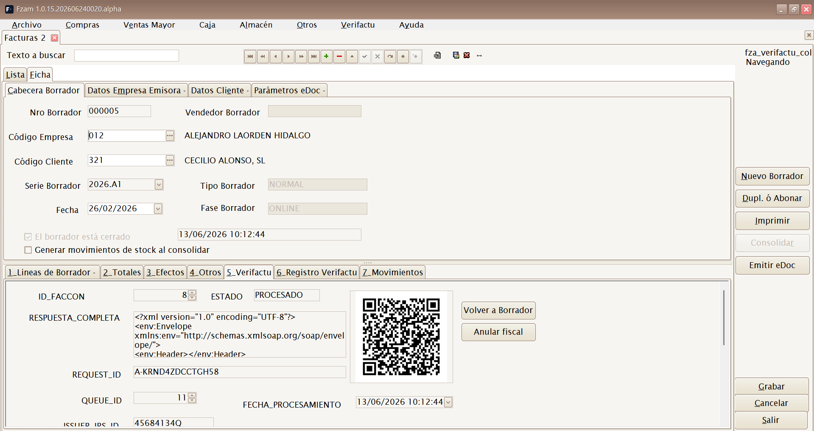
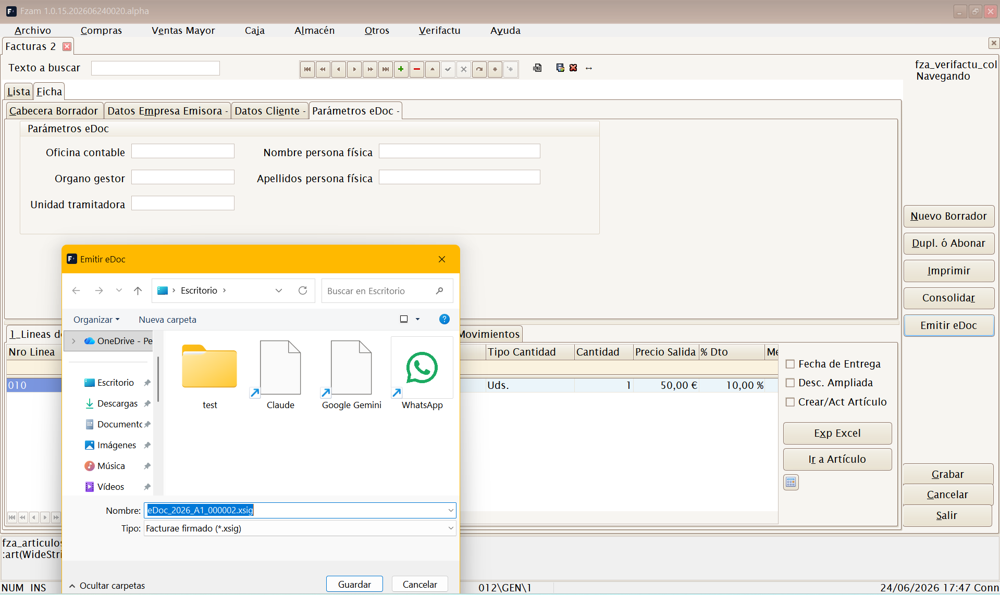
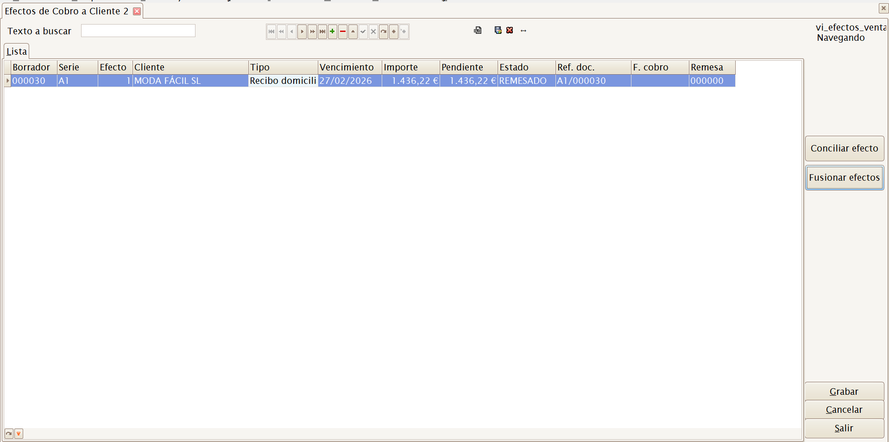
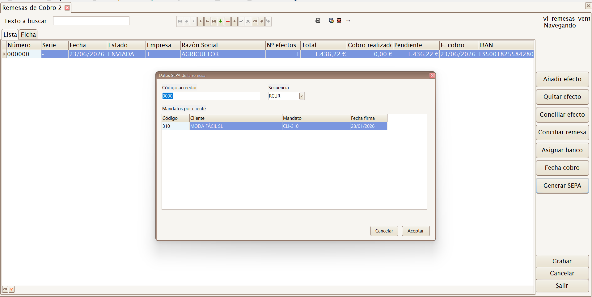
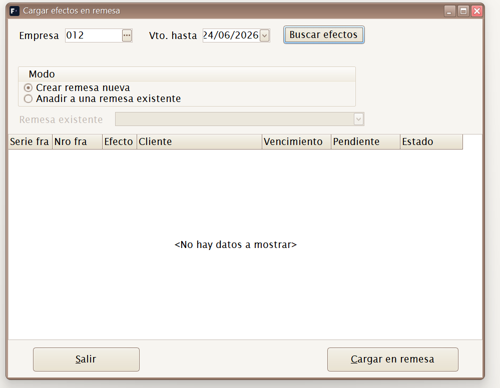
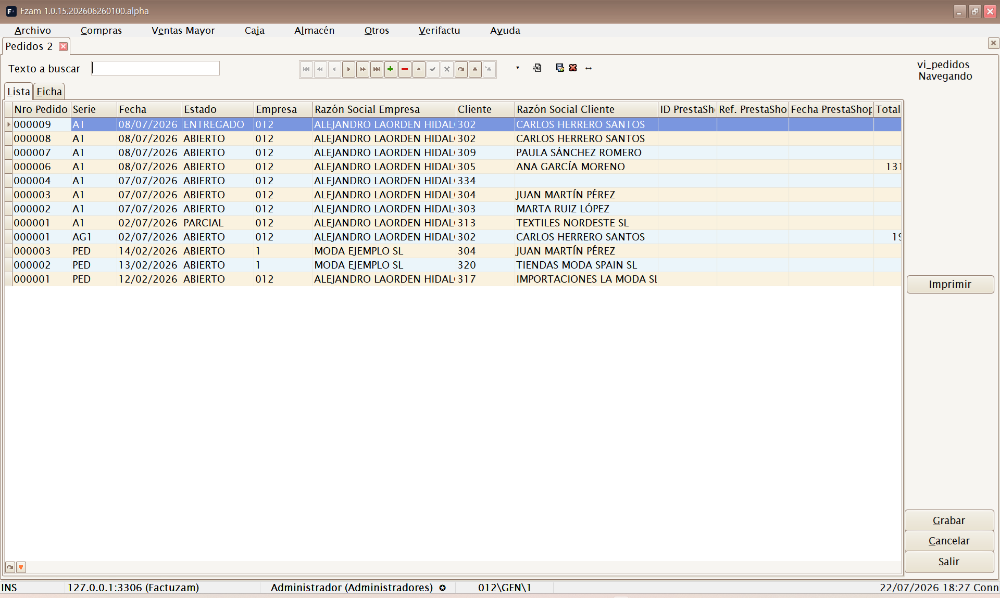
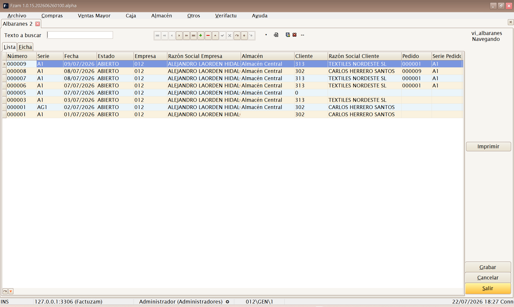
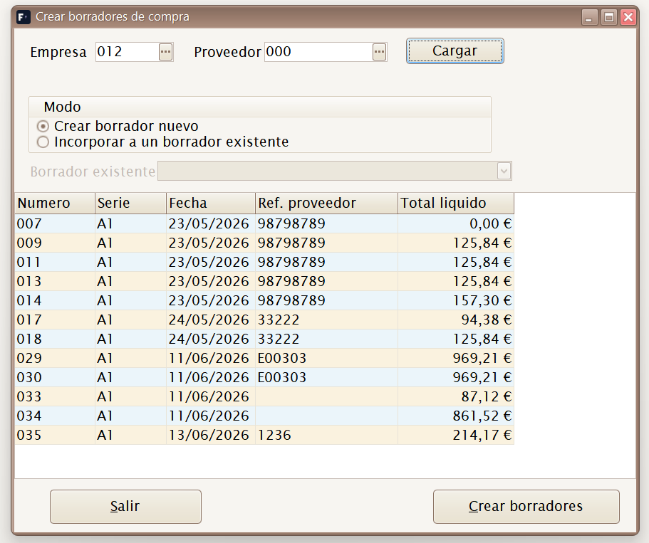
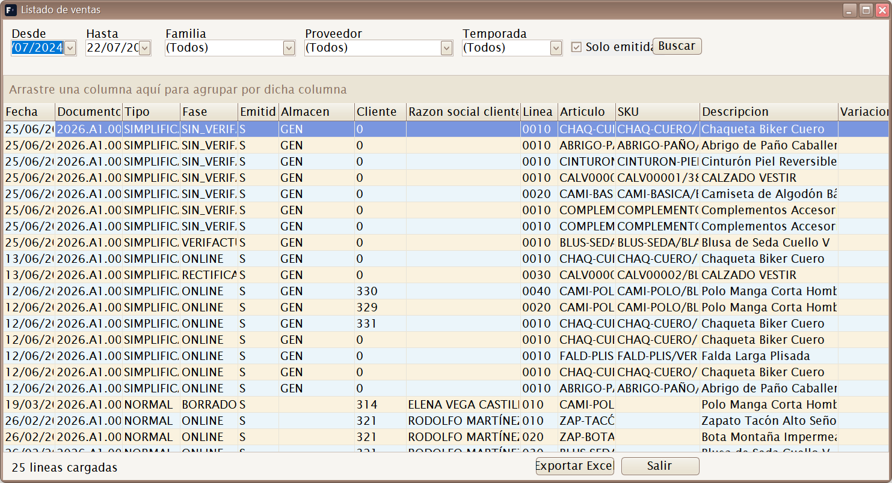

04 · Menú Ventas Mayor
El menú Ventas Mayor gestiona la venta al por mayor (B2B): ventas a otros comercios o clientes con factura nominativa, a diferencia de la venta al detalle en tienda, que se hace desde el módulo Caja.
Estructura del menú:
Ventas Mayor
├── Borradores
├── Efectos de cobro
├── Remesas de cobro
├── Cargar efectos en remesa...
├── Pedidos
├── Albaranes
└── Listados
└── VentasFlujo habitual de venta a mayor: Pedido del cliente → Albarán de salida (sale el stock) → Borrador de factura → Consolidar (registro fiscal). Se puede facturar albarán a albarán o agrupar varios albaranes en un solo borrador antes de emitirlo.
Borradores

Atajo de menú: [Ctrl]+[Alt]+[F]
Mantenimiento de Borradores de Venta Mayor. Mientras el documento está en fase BORRADOR se puede editar; al pulsar Consolidar se emite el registro fiscal según el modo configurado en Verifactu.
Cada borrador lleva:
- Cabecera: cliente, fecha, serie y número, forma de pago y vencimientos.
- Líneas: artículos/SKU, cantidades, precio tomado de la tarifa del cliente y descuentos.
- Totales e impuestos: base, IVA por tipo, recargo de equivalencia y retenciones según cliente y empresa.
- Efectos: vencimientos de cobro generados desde la forma de pago, con importe, vencimiento, estado y banco asociado.
Los borradores se firman o comunican a Verifactu (AEAT) según la configuración de certificado de la empresa (ver Empresas).
Un borrador puede crearse manualmente o a partir de albaranes pendientes de facturar, incluso agrupando varios albaranes de un cliente en un rango de fechas.
Al consolidar, el documento deja de ser editable. Las correcciones posteriores se hacen con Anular, Rectificar o Subsanar, según el caso fiscal. La pestaña Verifactu muestra QR, URL de cotejo, estado y registro asociado.
Efectos y eDoc en el borrador
El botón Generar efectos reparte el total líquido en vencimientos según la forma de pago. En facturas normales la pestaña 3 muestra Efectos de cobro; en simplificadas mantiene el circuito de recibos.
Desde la pestaña de efectos se puede marcar un vencimiento como Cobrado o Devuelto. Para gestionar muchos vencimientos juntos, usa las opciones de menú Efectos de cobro, Remesas de cobro y Cargar efectos en remesa....
La pestaña Parámetros eDoc guarda la foto de emisión para Facturae: DIR3 de oficina contable, órgano gestor y unidad tramitadora, además de nombre y apellidos cuando el receptor es persona física. Se propone desde la ficha del cliente y puede corregirse para esa factura concreta.
El botón Emitir eDoc genera un fichero Facturae firmado (.xsig) y
guarda el XML firmado en la factura. Solo se emite desde facturas normales
ya consolidadas, con certificado de empresa configurado y datos fiscales
completos.

Efectos de cobro
Mantenimiento de vencimientos de cliente. Cada efecto representa un cobro pendiente, cobrado, remesado o conciliado, generado desde un borrador de venta mayor.

Acciones principales:
- Conciliar efecto — registra un cobro total o parcial, con fecha, importe, tipo y referencia.
- Fusionar efectos — agrupa efectos pendientes cuando se necesita regularizar varios vencimientos en uno.
Estados habituales:
| Estado | Significado |
|---|---|
| PENDIENTE | Vencimiento vivo, todavía no cobrado. |
| COBRADO | Cobrado total o parcialmente. |
| REMESADO | Incluido en una remesa de cobro. |
| CONCILIADO | Fusionado o regularizado con otro efecto. |
Remesas de cobro
Agrupa efectos de cliente para gestionar cobros bancarios. La remesa recoge empresa, banco de cobro, fecha, número de efectos, total, cobro realizado y pendiente.

Acciones principales:
- Añadir efecto — abre la selección de efectos pendientes.
- Quitar efecto — retira el efecto seleccionado de la remesa.
- Conciliar efecto — registra el cobro de un efecto concreto.
- Conciliar remesa — registra el cobro de todos los efectos de la remesa.
- Asignar banco — fija o cambia el banco de cobro de la empresa.
- Fecha cobro — actualiza la fecha de cobro de la remesa.
- Generar SEPA — crea el fichero bancario cuando la remesa tiene los datos SEPA necesarios.
Cargar efectos en remesa...
Acceso directo al selector de efectos pendientes para crear una remesa nueva o alimentar una remesa existente.

Filtra por empresa y vencimiento máximo. Marca los efectos que quieras incluir y pulsa Cargar en remesa.
Pedidos

Atajo de menú: [Ctrl]+[Alt]+[P]
Mantenimiento de Pedidos de Venta. Registra lo que un cliente encarga (reserva de género). No mueve stock; sirve de base para generar el albarán de salida cuando se sirve el pedido.
Albaranes

Atajo de menú: [Ctrl]+[Alt]+[A]
Mantenimiento de Albaranes de Venta. Registra la salida real de mercancía hacia el cliente: al confirmarlo resta stock del almacén. Es el documento que después se factura.
Desde los albaranes se pueden crear borradores por rango de fechas. El selector permite marcar varios albaranes pendientes y generar un borrador agrupado para el mismo cliente.

Listados ▸ Ventas

Atajo de menú: [Ctrl]+[Alt]+[V]
Abre el generador de listados de ventas. Mediante un cuadro de filtros (rango de fechas, cliente, artículo, familia, serie…) genera un informe de las ventas realizadas, que se puede previsualizar, imprimir o exportar.
Útil para análisis comercial: qué se ha vendido, a quién y en qué periodo.